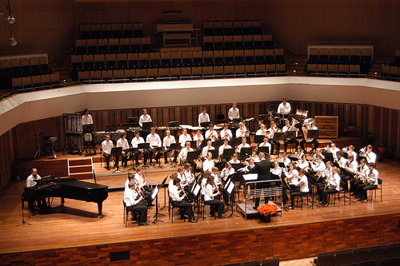
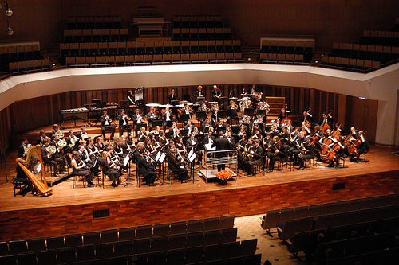
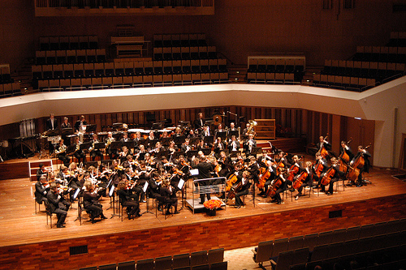

Klik hier om de site van het 3TU.Concert 2012 te openen.
Eén weekend, drie orkesten
In één weekend hebben Studenten Harmonie Orkest Twente (SHOT), het symfonieorkest van Delfts Studenten Muziek Gezelschap Krashna Musika en harmonieorkest Auletes van Eindhovens Studenten Muziek Gezelschap Quadrivium in alle drie de universiteitssteden concerten verzorgd. Tijdens elk concert verschenen de drie orkesten na elkaar op het podium en vulden ze ieder op hun eigen manier een deel van het programma.
Vele bezoekers zijn getuige geweest van deze fantastische concertreeks, die zondag 13 december werd afgesloten in Muziekcentrum Frits Philips in Eindhoven.



drieTUconcerten wint Student Union Cultuurprijs!
Het samenwerkingsproject drieTUconcerten heeft de Student Union Cultuurprijs gewonnen, een prijs voor het leveren van een positieve bijdrage aan het culturele klimaat op de campus.
Mogelijk vervolg drie-TUconcerten in 2012
Naar alle waarschijnlijkheid wordt in 2012 een vervolg gegeven aan dit unieke samenwerkingsproject. Blijf via deze website op de hoogte van het laatste nieuws.
Fantastisch weekend
De drieTUconcerten op 11, 12 en 13 december waren een groot succes! De organisatie bedankt alle deelnemers, publiek en anderen die dit weekend hebben doen slagen.
Meer foto's zijn te bezichtigen via de websites van de drie deelnemende verenigingen:
website SHOT
website Quadrivium
website Krashna Musika